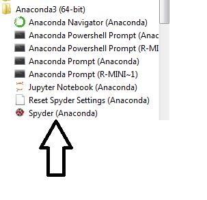
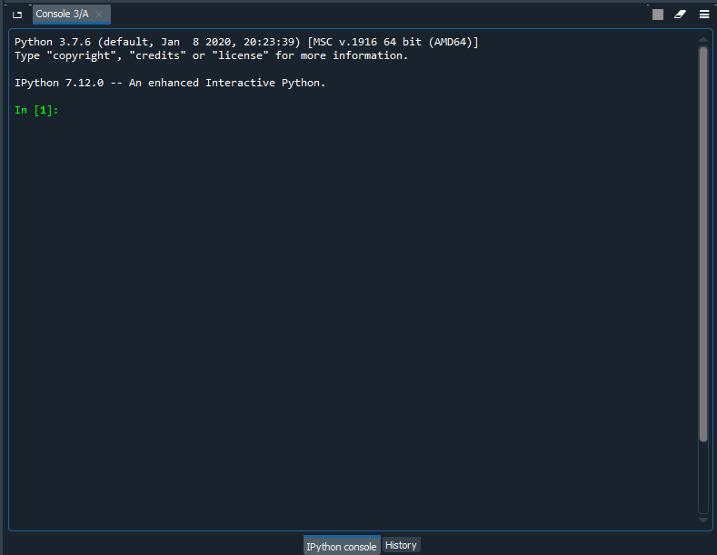
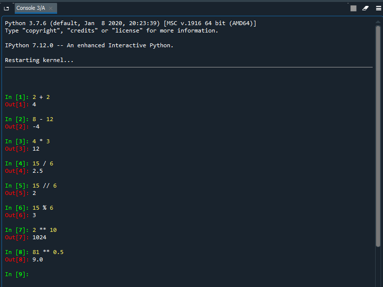
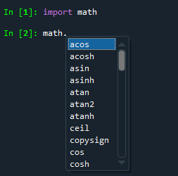
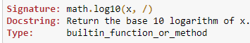

Richard Waterman
August 2026


# Addition
2 + 2
# Subtraction
8 - 12
# Multiplication
4 * 3
# Regular division
15 / 6
# Integer division (How many times 6 goes into 15)
15 // 6
# The remainder term from division
15 % 6
# Raising a number to the power
2 ** 10
# Finding the square root of a number
81 ** 0.59.0

---------------------------------------------------------------------------
NameError Traceback (most recent call last)
Cell In[2], line 1
----> 1 log(10)
NameError: name 'log' is not defined
import module_name
---------------------------------------------------------------------------
NameError Traceback (most recent call last)
Cell In[3], line 4
2 import math
3 # But this still does not work.
----> 4 log(10)
NameError: name 'log' is not defined2.302585092994046

math.*y*?
would list all functions in
the math package that contained the letter “y”.

# An integer type
type(6)
# A float type
type(3.14)
# A string type -- you can use single or double quotes to delineate a string
type("Hello 7770 Students!")
# A boolean type
type(True)bool# Cast between variable types
int(13.123) # Turn this number into an integer
str(98.4) # Turn this number into a string
float(3) # Turn this integer into a float
int('4') # Turn the string, 4, into an integer
int(True) # Turn a logical into an integer1# Check out the type of a variable
a = 6
print(isinstance(a, int)) # Check for an integer type
b = "Hello"
print(isinstance(b, bool)) # Check for a boolean type
c = True
print(isinstance(c, bool)) # Check for a boolean typeTrue
False
Truea = 31.2 # Assign the value 3.12 to the variable called "a"
b = 4 # Assign the value 4 to the variable called "b"
print(a + b) # Add them up and print the result
part_one = "Good" # Do the same for strings.
part_two = "news"
print(part_one + part_two) # Adding two strings concatenates them35.2
Goodnews31.2# Create a list containing a float, integer, string and logical
list_one = [3.14, 10, 'Fantastic', True]
print(type(list_one))
print(list_one)<class 'list'>
[3.14, 10, 'Fantastic', True]# Finding the length of the list
print(len(list_one))
print("The length of the list is:" + str(len(list_one)))
# Stick a new element on the end of the list:
list_one.append("new element at end")
print(list_one)
# Insert an element at position two (that's the third slot)
list_one.insert(2,"Inserted!")
print(list_one)4
The length of the list is:4
[3.14, 10, 'Fantastic', True, 'new element at end']
[3.14, 10, 'Inserted!', 'Fantastic', True, 'new element at end']# Remove an element and store it in a variable:
new_var = list_one.pop(2)
print(list_one) # Note the element has disappeared
print(new_var) # Here it is, stored in a variable.[3.14, 10, 'Fantastic', True, 'new element at end']
Inserted!# Combine (concatenate two lists using the "+" operator)
list_two = [False, 62, 55, "Bobby"]
print(list_one + list_two)[3.14, 10, 'Fantastic', True, 'new element at end', False, 62, 55, 'Bobby']# A list with the letters of the alphabet:
alphabet = ['a','b','c','d','e','f','g','h','i','j','k','l','m','n','o','p','q','r','s','t','u','v','w','x','y','z']
print(len(alphabet)) # A good check!26print(alphabet[0]) # The first element
print(alphabet[3:6]) # d through f
# Using minus notation lets you work backwards:
print(alphabet[-6:-3]) # The sixth from the end, to the fourth from the enda
['d', 'e', 'f']
['u', 'v', 'w']# If you use a second colon you can control the step length
print(alphabet[::4]) # Every fourth letter from the start
print(alphabet[::-1]) # Reverse a list['a', 'e', 'i', 'm', 'q', 'u', 'y']
['z', 'y', 'x', 'w', 'v', 'u', 't', 's', 'r', 'q', 'p', 'o', 'n', 'm', 'l', 'k', 'j', 'i', 'h', 'g', 'f', 'e', 'd', 'c', 'b', 'a']list_en = ["one","two","three"]
list_fr = ["un", "deux","troi"]
translate = list(zip(list_en, list_fr)) # zip the lists together)
print(translate) # Print the whole list:
print(translate[2]) # Just the element in the third position[('one', 'un'), ('two', 'deux'), ('three', 'troi')]
('three', 'troi')# My family
family = ["Richard", "Lisa", "David", "Thomas", "Alex"]
family.sort() # A plain sort
print(family)
family.sort(key = len) # Sort based on the length of the name
print(family)['Alex', 'David', 'Lisa', 'Richard', 'Thomas']
['Alex', 'Lisa', 'David', 'Thomas', 'Richard']old_list = [0,1,2,3,4,5] # The original list
new_list = old_list # A reference to the original
new_list[4] = 'Really?' # Update an element in the new_list
print("Here's the new list:", new_list) # As expected
print("And here is the original list:", old_list) # Realize that this list has been updated too.Here's the new list: [0, 1, 2, 3, 'Really?', 5]
And here is the original list: [0, 1, 2, 3, 'Really?', 5]old_list = [0,1,2,3,4,5] # The original list
new_list = old_list.copy() # A genuine, independent new list
new_list[4] = 'Really?' # Update an element in the new_list
print("Here's the new list:", new_list) # As expected
print("And here is the original list:", old_list) # The original list is still intactHere's the new list: [0, 1, 2, 3, 'Really?', 5]
And here is the original list: [0, 1, 2, 3, 4, 5]# A "dict" structure with a key (state abbreviation) and value: a list with full state name and capital city.
states = {'PA': ["Pennsylvania", "Harrisburg"],
'MD': ["Maryland", "Annapolis"],
'FL': ["Florida", "Tallahassee"]}
print(states){'PA': ['Pennsylvania', 'Harrisburg'], 'MD': ['Maryland', 'Annapolis'], 'FL': ['Florida', 'Tallahassee']}print(states['MD']) # Returns the relevant list.
print(states['MD'][1]) # Drills down on the returned list.
'CA' in states # Looks to see if one of the keys is called 'CA' ['Maryland', 'Annapolis']
Annapolis
False# Add a new element
states['OR'] = ["Oregon", "Eugene"]
print(states)
del states['MD'] # Delete the 'MD' element using the "del" Python keyword.
print(states)
states.pop('PA') # Remove and return the PA element{'PA': ['Pennsylvania', 'Harrisburg'], 'MD': ['Maryland', 'Annapolis'], 'FL': ['Florida', 'Tallahassee'], 'OR': ['Oregon', 'Eugene']}
{'PA': ['Pennsylvania', 'Harrisburg'], 'FL': ['Florida', 'Tallahassee'], 'OR': ['Oregon', 'Eugene']}
['Pennsylvania', 'Harrisburg']# The keys of the dict, contained in a list.
print(list(states.keys()))
# The values of the dict, contained in a list.
print(list(states.values()))['FL', 'OR']
[['Florida', 'Tallahassee'], ['Oregon', 'Eugene']]# The key is 'OR', and the capital city is in the second slot in the list:
states['OR'][1] = 'Salem'
print(states){'FL': ['Florida', 'Tallahassee'], 'OR': ['Oregon', 'Salem']}# A tuple with four elements
tuple_one = 2.1, 'pi', "hello", False
print(tuple_one)
# Accessing elements (2 and 3) by position:
print(tuple_one[1:3])
print(tuple_one[-2:-1]) # The penultimate element.
print(len(tuple_one)) # The number of elements in the tuple.(2.1, 'pi', 'hello', False)
('pi', 'hello')
('hello',)
4a, b, c, d = tuple_one # Unpack the tuple to variables
print("The variable 'b' contains the value: " + b)
e, f = tuple_one # If there aren't enough variables the assignment fails.The variable 'b' contains the value: pi
---------------------------------------------------------------------------
ValueError Traceback (most recent call last)
Cell In[28], line 3
1 a, b, c, d = tuple_one # Unpack the tuple to variables
2 print("The variable 'b' contains the value: " + b)
----> 3 e, f = tuple_one # If there aren't enough variables the assignment fails.
ValueError: too many values to unpack (expected 2)# The below syntax will collect all remaining elements into a catch-all variable.
# Note the "*" in front of the left_overs variable, which means it can accept any number of variables.
e, f, *left_overs = tuple_one
print(left_overs)['hello', False]# Make a first set
set_one = {'a', 'd', 'd', 'yes', True, 3.13, 'd'}
print(set_one) # Note how duplicate values are discarded.
# And now a second one
set_two = set(['fifteen', 'yes', 42.3, 42.3, 3.13, 'fifteen', 'a'])
print(set_two){True, 3.13, 'd', 'yes', 'a'}
{3.13, 'fifteen', 42.3, 'yes', 'a'}print(set_one.union(set_two)) # The union of two sets
print(set_one.intersection(set_two)) # The intersection of the two sets
print(len(set_one)) # The number of elements in set_one{True, 3.13, 'a', 'fifteen', 42.3, 'yes', 'd'}
{3.13, 'a', 'yes'}
5class_list = {'Mary', 'Bridget', 'Bill', 'Andreas', 'Matt', 'Cecilia'}
test_takers = {'Bill', 'Bridget', 'Andreas', 'Bruno'}
# 1. Who is in the class and took the test?
# 2. Who is in the class, but didn't take the test?
# 3. Who took the test, but isn't registered for the class?
print (class_list.intersection(test_takers))
print (class_list.difference(test_takers))
print (test_takers.difference(class_list)){'Andreas', 'Bill', 'Bridget'}
{'Mary', 'Cecilia', 'Matt'}
{'Bruno'}